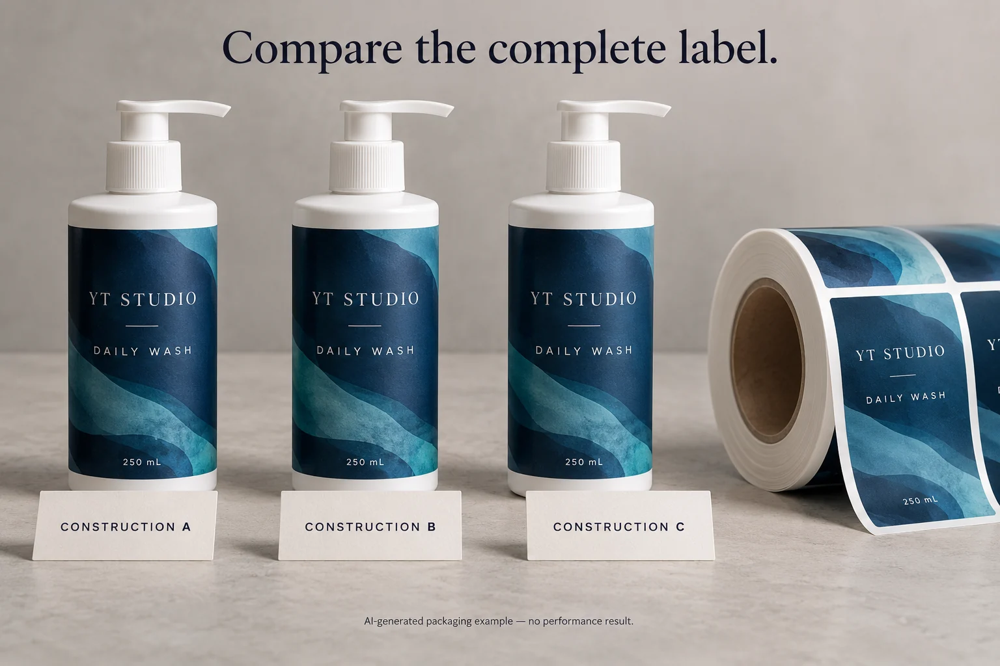
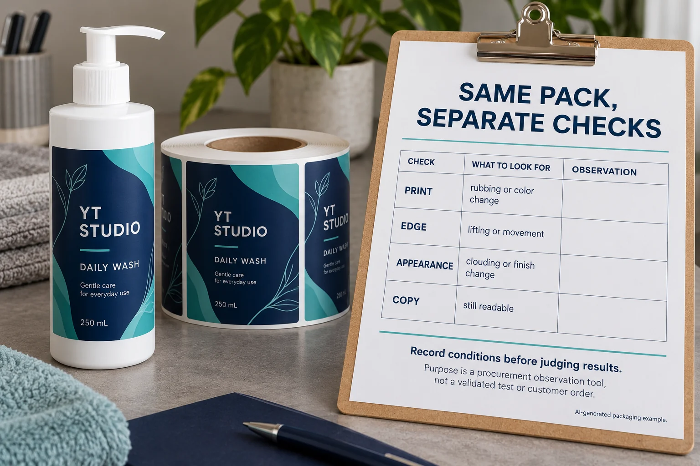

A supplier writes “waterproof BOPP” on a quotation. Procurement writes it into the purchase order. Later, one reviewer cares about smeared copy, another points to a lifted edge, and a third wants to know whether the label survives product drips. The same word has been asked to approve several different things.
Choose waterproof label materials by defining the pack and exposure first, then evaluating an identified printed construction. Face film, adhesive, printing, protective finish and application conditions need to be considered together. A material family is a starting point for a proposal, not a complete performance promise.
This guide is for cosmetic and personal-care packaging buyers comparing constructions. It provides a way to organize supplier evidence. It does not prescribe a universal test duration, pass limit or approved material for every bottle.

Replace “waterproof” with an answerable use description
Identify the container resin or surface coating, label panel, actual fill and intended handling. Then describe relevant exposure: occasional splashing, persistent wet storage, formula drips, rubbing, refrigeration or container movement. Ask the responsible technical team which conditions need evaluation.
Keep these exposures separate. A water-related result does not automatically cover oil or a cleaning formula. A label that stays attached has not necessarily preserved readable print. Procurement needs a proposal tied to the use being purchased, rather than a broad adjective copied across every SKU.
For a shampoo or body-wash project, use the wet-use bottle checklist for its package-specific layout questions. Here the narrower task is comparing the complete constructions proposed for that use.
Understand what a material name leaves out
Avery Dennison’s construction overview separates the face material, adhesive and liner. That distinction helps buyers request an identifiable combination. It does not make one supplier’s product recommendation transferable to another construction.
Avery also gives a useful product-specific example in its water-resistant and waterproof material guidance: the stated result for one durable film depends on the printing method. The limited lesson is that the substrate name alone may leave out an important condition. That example is not a test result for the labels in your quotation.
Ask the converter for the material reference, adhesive reference, printing process and protective finish. Include the liner and roll arrangement when machine application matters. Retain those details with the sample; a later substitution needs its own review.
Compare BOPP, PET and vinyl as candidate routes
| Candidate route | Why a buyer might evaluate it | Information still needed |
|---|---|---|
| BOPP construction | A proposed film route for opaque or clear bottle labels | Exact face stock, adhesive, finish and evidence for the actual container and use |
| PET construction | A proposed clear or opaque film option within the converter’s portfolio | Supported thickness, surface compatibility, printing and handling scope |
| Vinyl construction | A candidate where the supplier proposes a particular flexible or durable solution | Specific product reference, intended-use evidence and any restrictions |
| Protected paper construction | A proposal where paper appearance is part of the design | Which exposures the complete printed label covers, including edges and finish limitations |
This table deliberately gives no universal winner. Naming a polymer does not identify thickness, adhesive, coating or converting conditions. If a supplier recommends one route, ask what evidence makes it appropriate for your job. If it cannot explain the boundary, the recommendation is not ready for procurement approval.
For transparent appearance, use the clear cosmetic label guide. Clear and opaque refer to the design decision; neither word establishes wet-use performance.
Separate surface, edge and printed-copy observations
Create a review sheet before samples are evaluated. Give every sample a construction ID and retain the artwork revision, container and preparation record. If the team changes the bottle or finish halfway through, create another identifiable comparison.
| Observation | Record separately | Decision it supports |
|---|---|---|
| Printed surface | Rubbing, color change, smearing or another described feature | Whether the printed presentation meets the agreed requirement |
| Edge and attachment | Location of lifting, movement or another attachment observation | Which bond or application question requires investigation |
| Appearance | Clouding, finish change or another visible difference | Whether the sample matches the accepted visual objective |
| Copy and codes | Readability and any separately required verification | Whether information remains usable under the specified review |
Define the exposure and preparation with the competent parties before making comparisons. Use their instructions for application, conditioning and observation. Record the method reference, sample identity, operator and relevant conditions. This is a procurement record, not a replacement for a validated technical method.

Start by confirming that the sample represents the proposed finished label. Carry out the agreed review, describe each observation and compare it with the documented acceptance requirement. Route unexplained findings to the label supplier and relevant packaging or quality contact. Do not diagnose the cause from the photograph alone.
Put the actual oil-contact event in the sample brief
A request for oil resistant labels becomes more useful when it identifies what reaches the label and when. Product residue during filling, a drip after dispensing and oily fingers during normal use are different questions. Record the real event; do not invent a severe exposure simply to make a sample comparison look decisive.
In a public body-product seller discussion, the author needed labels for oils and scrubs to hold up in use, then later reported a satisfactory home-printing setup. That is a reason to specify the required outcome, rather than assume outsourcing or a new material name is always the answer. The self-report is not a durability test or a YT customer case.
| Input | Write down | Keep pending when |
|---|---|---|
| Contact event | Product reference; filling, dispensing, storage or handling; where contact occurs | The actual liquid or use stage is unknown |
| Representative pack | Container reference and surface; artwork revision; complete construction ID | The sample differs from the quoted finish or bottle |
| Decision and owner | Copy that must remain readable; agreed appearance; method and acceptance owner | Only a water result is available for an oil question |
Attach this brief to the observation sheet above. Have the competent parties agree the method and acceptance requirement, identify the representative finished samples, then record copy, surface and edge observations separately. An unexplained mark goes back to the label supplier and packaging or quality contact; it does not justify diagnosing adhesive failure from a photo.
Keep an existing route if its evidence covers the actual use. If the required oil-contact outcome remains unsupported, request that missing evidence before releasing the requirement. Send the brief with the container and quantity per design through the inquiry path below.
Two reasonable purchases can use different evidence
Consider a hypothetical glass serum bottle stored dry but exposed to occasional product drips. Its team needs a proposal addressing the relevant contact and presentation. An unrelated immersion demonstration may leave that actual question unanswered.
A frequently handled squeeze bottle used in a shower presents another decision. Its review may need to cover wet handling and movement together, under conditions defined by the technical parties. An empty rigid-container sample would not represent that use. The squeeze review guide keeps that handling sequence separate from a generic water-resistance claim.
The cheaper quoted construction may be sensible when its evidence covers the use. A more expensive material name is not a substitute for missing evidence. Compare the scope each supplier has actually supported, including any remaining sample or approval work.
Hold the unsupported claim, not the whole conversation
Do not approve the unresolved requirement if the proposed sample lacks the final finish, uses an unidentified adhesive or was applied to a different surface. Record what the evidence does support and request the missing comparison. For preparation uncertainty, use the bottle-surface preparation guide before comparing adhesive behavior.
For custom personal-care bottle labels, send the actual container reference, dimensions, quantity per design, artwork and intended exposure. Include any proposed construction IDs and the specific observation still unresolved. Prepare the inquiry message; attach supporting photos and files in email or WhatsApp before sending. Ask for a proposal the purchasing and technical teams can approve against the same conditions.